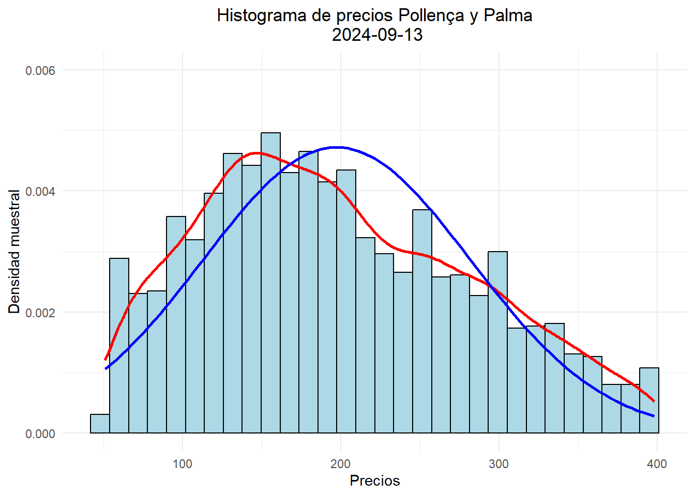
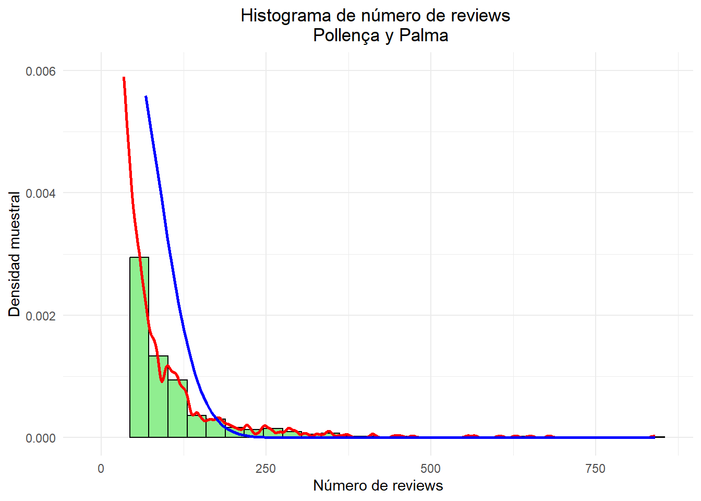
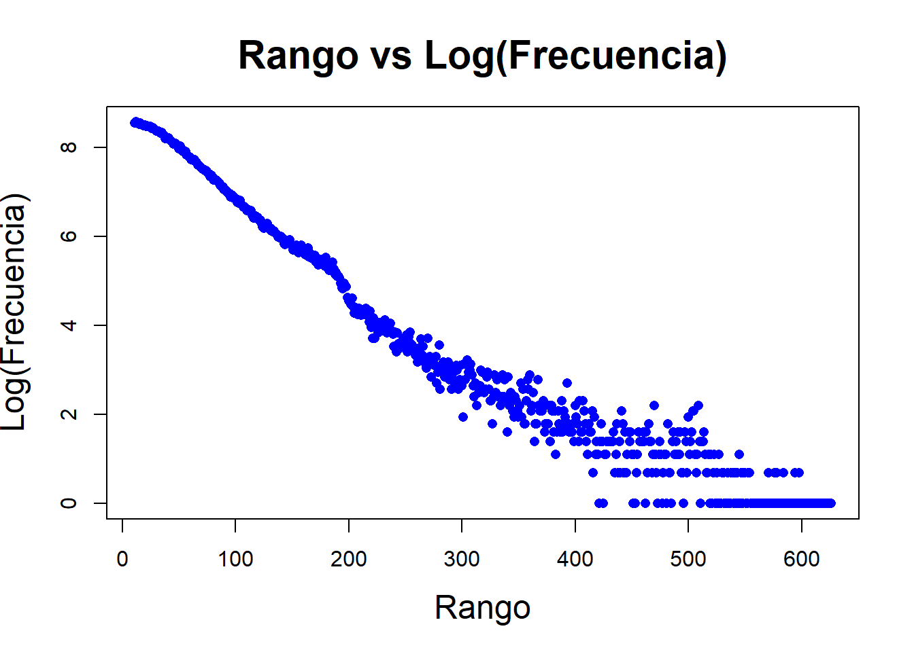
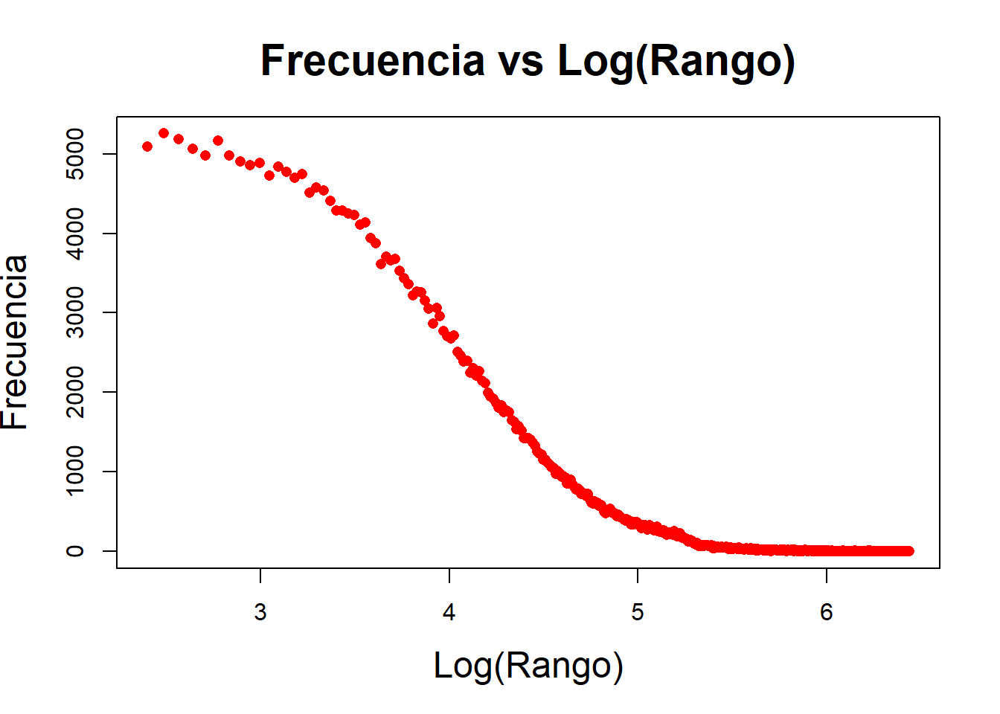
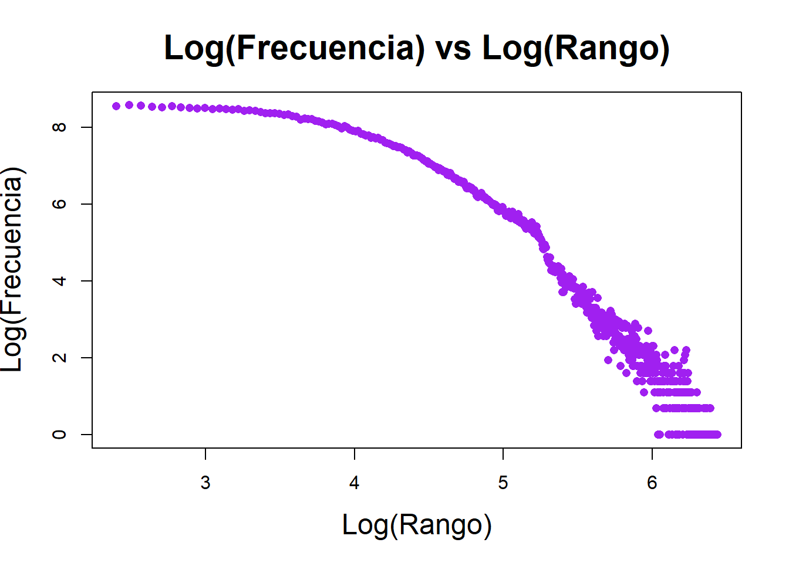

Maria Kupriyenko, Jaume Juan Huguet, Kalyarat Asawapoom
Instrucciones para el taller
Se entrega en grupos que deben de estar constituidos en la actividad de grupos. Los grupos son de 2 o 3 ESTUDIANTES, loa caso especiales consultadlos con el profesor para que los autorice.
Leeremos los siguientes datos de la zona de etiqueta mallorca con el código siguiente:
Código
# Carga de datos del objeto 'listings_common0_select'.load("clean_data/mallorca/listing_common0_select.RData")ls() # Lista los objetos cargados en el entorno
[1] "listings_common0_select"
Código
str(listings_common0_select) # Muestra la estructura del objeto
tibble [52,088 × 16] (S3: tbl_df/tbl/data.frame)
$ date : Date[1:52088], format: "2023-12-17" "2023-12-17" ...
$ id : chr [1:52088] "49752748" "935239498971961146" "24932587" "782518268756227225" ...
$ price : num [1:52088] 2636 107 50 683 62 ...
$ longitude : num [1:52088] 2.71 3.12 2.62 3.21 3.24 ...
$ latitude : num [1:52088] 39.8 39.3 39.6 39.5 39.4 ...
$ property_type : chr [1:52088] "Entire home" "Entire home" "Entire rental unit" "Entire villa" ...
$ room_type : chr [1:52088] "Entire home/apt" "Entire home/apt" "Entire home/apt" "Entire home/apt" ...
$ accommodates : num [1:52088] 14 5 2 10 4 8 5 2 6 10 ...
$ bedrooms : num [1:52088] NA NA NA NA NA NA NA NA NA NA ...
$ beds : num [1:52088] 9 4 1 7 3 5 3 3 5 5 ...
$ number_of_reviews : num [1:52088] 0 0 124 0 18 0 0 73 0 0 ...
$ review_scores_rating : num [1:52088] NA NA 4.88 NA 4.89 NA NA 4.73 NA NA ...
$ review_scores_value : num [1:52088] NA NA 4.64 NA 4.83 NA NA 4.64 NA NA ...
$ host_is_superhost : logi [1:52088] FALSE FALSE TRUE FALSE FALSE FALSE ...
$ host_name : chr [1:52088] "Novasol" "Mallorca Villa Selection" "Juana" "Homerti" ...
$ neighbourhood_cleansed: chr [1:52088] "Sóller" "Santanyí" "Palma de Mallorca" "Felanitx" ...
listings
Hemos cargado el objeto listings_common0_select que contiene los datos de los 4 periodos de apartamentos de inside Airbnb de Mallorca con unas 15 ó 16 variables.
Notemos que cada apartamento:
queda identificado por id y por date que nos da el periodo en la que apareció el dato.
así que cada apartamento aparece 4 veces ya que hemos elegido solo los apartamentos que aparecen en las 4 muestras.
Las muestras son 2023-12-17, 2024-03-23, 2024-06-19, 2024-09-13,
Estos datos necesitan leerse de forma adecuada, las columnas 1, 2 y 4 deben ser de tipo character las otras son correctas
Código
# Carga de datos de reseñas desde un archivo CSV comprimidoreviews=read_csv("data/mallorca/2023-12-17/reviews.csv.gz")str(reviews)
spc_tbl_ [344,651 × 6] (S3: spec_tbl_df/tbl_df/tbl/data.frame)
$ listing_id : num [1:344651] 69998 69998 69998 69998 69998 ...
$ id : num [1:344651] 881474 4007103 4170371 4408459 4485779 ...
$ date : Date[1:344651], format: "2012-01-24" "2013-04-02" ...
$ reviewer_id : num [1:344651] 1595616 3868130 5730759 5921885 810469 ...
$ reviewer_name: chr [1:344651] "Jean-Pierre" "Jo And Mike" "Elizabeth" "Jone" ...
$ comments : chr [1:344651] "This place was charming! Lorenzo himself is a very warm and engaging host and made us feel very welcome. \r<br/"| __truncated__ "We had a four night stay at this gorgeous apartment and it was absolutely perfect. It's really pretty, beautifu"| __truncated__ "Lor's apartment looks exactly like the pictures! It is perfectly located for historic Palma - close to the Cath"| __truncated__ "Wonderful place! 10/10. Charming, spacious and comfortable. Looks even more splendid than in the pictures. The "| __truncated__ ...
- attr(*, "spec")=
.. cols(
.. listing_id = col_double(),
.. id = col_double(),
.. date = col_date(format = ""),
.. reviewer_id = col_double(),
.. reviewer_name = col_character(),
.. comments = col_character()
.. )
- attr(*, "problems")=<externalptr>
Código
head(reviews)
# A tibble: 6 × 6
listing_id id date reviewer_id reviewer_name comments
<dbl> <dbl> <date> <dbl> <chr> <chr>
1 69998 881474 2012-01-24 1595616 Jean-Pierre "This place was charm…
2 69998 4007103 2013-04-02 3868130 Jo And Mike "We had a four night …
3 69998 4170371 2013-04-15 5730759 Elizabeth "Lor's apartment look…
4 69998 4408459 2013-05-03 5921885 Jone "Wonderful place! 10/…
5 69998 4485779 2013-05-07 810469 Andrea "My boyfriend and I, …
6 69998 4619699 2013-05-15 3318059 Devii "We had a very last m…
neighbourhoods.csv
Son dos columnas y la primera es una agrupación de municipios (están NA) y la segunda es el nombre del municipio
Código
# Carga de datos de municipios desde un archivo CSV.municipios=read_csv("data/mallorca/2023-12-17/neighbourhoods.csv")str(municipios)
spc_tbl_ [53 × 2] (S3: spec_tbl_df/tbl_df/tbl/data.frame)
$ neighbourhood_group: logi [1:53] NA NA NA NA NA NA ...
$ neighbourhood : chr [1:53] "Alaró" "Alcúdia" "Algaida" "Andratx" ...
- attr(*, "spec")=
.. cols(
.. neighbourhood_group = col_logical(),
.. neighbourhood = col_character()
.. )
- attr(*, "problems")=<externalptr>
Código
head(municipios)
# A tibble: 6 × 2
neighbourhood_group neighbourhood
<lgl> <chr>
1 NA Alaró
2 NA Alcúdia
3 NA Algaida
4 NA Andratx
5 NA Ariany
6 NA Artà
neighbourhoods.geojson
Es el mapa de Mallorca, o podemos leer así:
Código
library(sf)library(tmap)# Leer el archivo GeoJSONgeojson_sf <- sf::st_read("data/mallorca/2024-09-13/neighbourhoods.geojson")
Reading layer `neighbourhoods' from data source
`C:\Users\mkupr\Documents\GitHub\PracticaAirBnb\data\mallorca\2024-09-13\neighbourhoods.geojson'
using driver `GeoJSON'
Simple feature collection with 53 features and 2 fields
Geometry type: MULTIPOLYGON
Dimension: XY
Bounding box: xmin: 2.303195 ymin: 39.26403 xmax: 3.479028 ymax: 39.96236
Geodetic CRS: WGS 84
Código
# Crear un mapa# interactivotmap_mode("plot") # Cambiar a modo view/plot que es interactivo/estáticotm_shape(geojson_sf) +tm_polygons(col ="cyan", alpha =0.6) +tm_layout(title ="Mapa - GeoJSON Mallorca con municipios")
Tenéis que consultar en la documentación de inside Airbnb para saber que significa cada variable. Os puede ser útil leer los ficheros DATA_ABB_modelo_de_datos.html y DATA_ABB_modelo_de_datos.pdf en los que se explica el modelo de datos de inside Airbnb y como se cargan en el espacio de trabajo.
Responder las siguientes preguntas con formato Rmarkdown (.Rmd) o quarto (.qmd) y entregad la fuente un fichero en formato html como salida del informe. Se puntúa la claridad de la respuesta, la calidad de la redacción y la corrección de la respuesta.
Pregunta 1 (1punto)
Del fichero con los datos de listings listing_common0_select.RData calcula los estadísticos descriptivos de las variable price y de la variable number_of_reviews agrupados por municipio y por periodo.
Presenta los resultados con una tabla de kableExtra.
Consideremos las variables price y number_of_reviews de Pollença y Palma del periodo “2024-09-13”, del fichero listing_common0_select.RData. Estudiad si estos datos se aproximan a una distribución normal gráficamente. Para ello, dibujad el histograma, la función “kernel-density” que aproxima la densidad y la densidad de la normal de media y varianza las de las muestras de las variables price (para precios mayores de 50 y menores de 400) y number_of_reviews para Palma y Pollença
Solución
Código
# Analizamos el precioprice2 = listings_common0_select %>%filter(neighbourhood_cleansed %in%c("Pollença", "Palma de Mallorca") & date =="2024-09-13")# Juntamos los precios de los dos municipiosstr(price2)
num [1:3126] 100 222 NA 210 221 NA 159 195 123 110 ...
Código
# Filtramos los precios para que estén entre 50 y 400price2=na.omit(price2[price2>50& price2<400])mean_price=mean(price2)sd_price=sd(price2)mean_price
[1] 197.1927
Código
sd_price
[1] 84.488
Código
# Data frame de preciosdata <-data.frame(price2 = price2)# Genera el gráfico con ggplotggplot(data, aes(x = price2)) +geom_histogram(aes(y = ..density..), bins =30, fill ="lightblue", color ="black") +geom_density(color ="red", size =1) +stat_function (fun = dnorm, args =list(mean = mean_price, sd = sd_price), color ="blue", size =1) +labs(title ="Histograma de precios Pollença y Palma\n 2024-09-13", # Títulox ="Precios", # Etiqueta del eje xy ="Densidad muestral") +# Etiqueta del eje Yylim(0, 0.006) +theme_minimal() +theme(plot.title =element_text(hjust =0.5)) # Centra el título

El histograma representa la distribución de los precios para valores filtrados entre 50 y 400.
La curva roja representa la estimación de densidad mediante un kernel density (no paramétrica). Esta sigue la distribución empírica de los datos. Mientras que la curva azul, que representa densidad de una distribución normal basada en la media y la desviación estándar de la muestra no ajuste perfectamente a los datos especialmente en la parte izquierda.
En conclusión, al observar el gráfico, la distribución de precios no sigue exactamente una distribución normal.
Ahora calculamos las estadíticas con la variable number_of_reviews
Código
# Analizamos reviews# Filtramos los datosreviews2 = listings_common0_select %>%filter(neighbourhood_cleansed %in%c("Pollença", "Palma de Mallorca") & date =="2024-09-13")str(reviews2)
# Calculamos la media y la desviación estándarmean_reviews <-mean(reviews2)sd_reviews <-sd(reviews2)mean_reviews
[1] 29.77831
Código
sd_reviews
[1] 57.92144
Código
# Generamos el gráfico con ggplotdata_reviews <-data.frame(reviews2 = reviews2)ggplot(data_reviews, aes(x = reviews2)) +geom_histogram(aes(y = ..density..), bins =30, fill ="lightgreen", color ="black") +geom_density(color ="red", size =1) +stat_function(fun = dnorm, args =list(mean = mean_reviews, sd = sd_reviews), color ="blue", size =1) +labs(title ="Histograma de número de reviews \n Pollença y Palma",x ="Número de reviews", y ="Densidad muestral" ) +ylim(0,0.006) +theme_minimal() +theme(plot.title =element_text(hjust=0.5))

El histograma muestra la distribución empírica de los datos de number_of_reviews.
La curva roja corresponde a la estimación de la densidad Kernel, que sigue de cerca la forma del histograma, especialmente la concentración de datos en valores bajos.
La curva azul representa la distribución normal teórica calculada con la media y la desviación estándar de la muestra. Esta no se ajusta bien a los datos, ya que decrece más rápido en comparación con la densidad Kernel.
En conclusión, la variable number_of_reviews no sigue una distribución normal.
Pregunta 3 (1punto)
Con los datos de listings_common0_select de todos los periodos, contrastar si la media del precio en Pollença es igual a la de Palma contra que es mayor que en Palma para los precios mayores que 50 euros y menores de 400. Construid la hipótesis nula y alternativa, calculad el p-valor y el intervalo de confianza asociado al contraste. Justifica técnicamente la conclusión del contraste.
Solución
Sea \mu_{\texttt{Pollença}} y \mu_{Palma} las medias de los precios en Pollença y Palma respectivamente. La hipótesis nula y aleternativa son:
\left\{
\begin{aligned}
H_0 & : \mu_{\mathrm{\texttt{Pollença}}} = \mu_{\mathrm{Palma}} \\
H_1 & : \mu_{\mathrm{\texttt{Pollença}}} \leq \mu_{\mathrm{Palma}}
\end{aligned}
\right.
Primero calculamos los datos que nos piden
Código
# Extraemos y limpiamos los precios de Pollençaprice_Pollença = listings_common0_select %>%filter(neighbourhood_cleansed =="Pollença"& price >50&price <400) %>%select(price)str(price_Pollença) # Verificamos la estructura del dataframe (tibble)
# Extraemos y limpiamos los precios de Palmaprice_Palma = listings_common0_select %>%filter(neighbourhood_cleansed =="Palma de Mallorca"& price >50& price <400) %>%select(price)str(price_Palma) # Verificamos la estructura del dataframe (tibble)
Hemos guardado en los objetos price_Pollença y price_Palma los precios de Pollença y Palma respectivamente sin NA’s y comprendidos entre 50 y 400 euros.
El contraste se puede realizar con la función t.test de R muestras independientes y tamaños 6745 y 2648 respectivamente.
Código
# Contraste t para muestras independientes (hipótesis unilateral: Pollença <= Palma)t.test(price_Pollença, price_Palma, alternative ="less", mu =0, conf.level =0.95, var.equal =TRUE)
Two Sample t-test
data: price_Pollença and price_Palma
t = 19.73, df = 9391, p-value = 1
alternative hypothesis: true difference in means is less than 0
95 percent confidence interval:
-Inf 39.63773
sample estimates:
mean of x mean of y
197.3300 160.7428
El p-valor es muy alto
Código
# Repetimos el contraste, pero sin asumir varianzas igualest.test(price_Pollença, price_Palma, alternative ="less", mu =0, conf.level =0.95, var.equal =FALSE)
Welch Two Sample t-test
data: price_Pollença and price_Palma
t = 18.785, df = 4395.8, p-value = 1
alternative hypothesis: true difference in means is less than 0
95 percent confidence interval:
-Inf 39.79152
sample estimates:
mean of x mean of y
197.3300 160.7428
Para decidir si las varianzas son iguales o no hacemos
Código
# Verificamos si las varianzas son iguales entre ambas muestrasvar.test(price_Pollença, price_Palma)
F test to compare two variances
data: price_Pollença and price_Palma
F = 0.79791, num df = 6744, denom df = 2647, p-value = 1.504e-12
alternative hypothesis: true ratio of variances is not equal to 1
95 percent confidence interval:
0.7484185 0.8499122
sample estimates:
ratio of variances
0.7979091
Y vemos que las varianzas no son iguales. Por tanto, el contraste se realiza con var.equal = FALSE.
Las dos pruebas t, tanto la versión estándar como la de Welch, indican que las medias de los precios en Pollença y Palma de Mallorca son significativamente diferentes.
El p-valor es 1, lo que significa que no hay evidencia para rechazar la hipótesis nula de que la diferencia en las medias es igual a 0 en la dirección planteada. Esto implica que, aunque los precios promedio sean diferentes, la diferencia observada podría ser atribuida al azar en los datos.
La diferencia promedio de precios es de aproximadamente 36.59 unidades, lo que podría considerarse relevante desde el punto de vista práctico.
El F-test muestra que la relación entre las varianzas es 0.798, lo que indica que la varianza de los precios en Pollença es menor que la de Palma de Mallorca.
El p-valor es 1.504e-12, lo cual es extremadamente pequeño y sugiere que las varianzas son significativamente diferentes. Esto justifica la aplicación de la versión de Welch del t-test, ya que las varianzas no son iguales.
El intervalo de confianza para la diferencia de medias incluye valores negativos y positivos, lo que refuerza la conclusión de que no hay una diferencia significativa entre las medias en la dirección planteada. Sin embargo, el límite superior del intervalo indica que la diferencia máxima observada sería de aproximadamente 39.8 unidades.
Aunque las medias muestren una diferencia aparente entre los precios en Pollença y Palma de Mallorca, no hay suficiente evidencia estadística para afirmar que esta diferencia es significativa. Sin embargo, la diferencia en las varianzas sí es significativa, lo que sugiere que los precios en Palma de Mallorca son más dispersos (mayor variabilidad) en comparación con los de Pollença.
Pregunta 4 (1punto)
Con los datos de listings_common0_select, contrastar si las medias de los precios en Palma entre los periodos “2023-12-17” y “2024-03-23” son iguales contra que son menores en 2023. Construid la hipótesis nula y alternativa, calculad el p-valor y el intervalo de confianza asociado al contraste. Haced un diagrama de caja comparativo de los precios por municipio por periodo y coméntalo.
Solución
Sea \mu_{2023} Y \mu_{2024} las medias de los precios en Palma en los periodos “2023-12-17” y “2024-03-23” respectivamente. La hipótesis nula y alternativa son:
Código
# Calculamos el contraste de hipótesis# Las medias de los precios en Palma entre "2023-12-17" y "2024-03-23"# H0: \( \mu_{2023} = \mu_{2024} \)# H1: \( \mu_{2023} < \mu_{2024} \)# Seleccionamos los precios de los periodos especificadosprice_2023= listings_common0_select %>%filter(neighbourhood_cleansed=="Palma de Mallorca"& date=="2023-12-17") %>%arrange(id)price_2024= listings_common0_select %>%filter(neighbourhood_cleansed=="Palma de Mallorca"& date=="2024-03-23") %>%arrange(id)# Verificamos que sean los mismos apartamentosall(table(price_2023$id==price_2024$id))
[1] TRUE
Luego son los mismo apartamentos así que tenemos muestras dependientes el precio del apartamento en 2023 y el del MISMO apartamento en 2024. El test es:
Código
# Realizamos el test t para muestras dependientes (paired)t.test(price_2023$price, price_2024$price, alternative ="less", mu=0, conf.level=0.95,paired=TRUE)
Paired t-test
data: price_2023$price and price_2024$price
t = 2.3951, df = 910, p-value = 0.9916
alternative hypothesis: true mean difference is less than 0
95 percent confidence interval:
-Inf 33.82886
sample estimates:
mean difference
20.0472
Aceptamos que la media es mayor en 2024 que en 2023
Interpretación del resultado:
No se rechaza la hipótesis nula: no hay evidencia suficiente para afirmar que los precios en 2023 son menores que los de 2024.
El p-valor alto (0.9916) y el intervalo de confianza (-Inf, 33.83) sugieren que cualquier diferencia observada podría deberse al azar.
Aunque la media en 2024 parece mayor (diferencia promedio = 20.05), esta no es estadísticamente significativa.
Código
# Creamos el diagrama de caja comparativo por periodolibrary(ggplot2)price_comparison <- listings_common0_select %>%filter(neighbourhood_cleansed =="Palma de Mallorca"& date %in%c("2023-12-17", "2024-03-23")) %>%mutate(period =ifelse(date =="2023-12-17", "2023", "2024"))ggplot(price_comparison, aes(x = period, y = price, fill = period)) +geom_boxplot() +labs(title ="Comparación de precios por periodo",x ="Periodo",y ="Precio",fill ="Periodo" ) +theme_minimal()
Observaciones del gráfico:
Distribución central: Ambas cajas son similares en tamaño y ubicación. La mediana (línea dentro de las cajas) parece ligeramente más alta para 2024, sugiriendo un incremento moderado en los precios promedio.
Rango de precios: Los precios muestran una alta dispersión, con valores atípicos muy elevados en ambos periodos. El rango de los valores extremos parece similar, aunque hay más puntos alejados del cuerpo principal de datos en 2024.
Similitud general: Aunque se observa una ligera diferencia en las medianas y la posición de las cajas, estas no parecen lo suficientemente marcadas como para indicar un cambio significativo.
Conclusión: El gráfico apoya los resultados del test t: no hay evidencia de una diferencia estadísticamente significativa entre los precios de los dos periodos. Si bien 2024 muestra precios ligeramente más altos en promedio, la variación en los datos y la presencia de valores atípicos sugieren que la diferencia podría deberse al azar.
Pregunta 5 (1punto)
Calcular la proporción de apartamentos de la muestra “2024-03-23” con media de valoración review_scores_rating mayor que 4 en Palma y en Pollença son iguales contra que son distintas. Construid un intervalo de confianza para la diferencia de proporciones.
Solución
Sea p_{\texttt{Pollença}} y p_{\texttt{Palma}} las proporciones de apartamentos con media de valoración review_scores_rating mayor que 4 en Pollença y Palma respectivamente.
Calculemos las proporciones muestrales
Código
# Filtramos los datos de valoraciones para Pollençarating_Pollença = listings_common0_select %>%filter(neighbourhood_cleansed =="Pollença"& date =="2024-03-23")rating_Pollença =na.omit(rating_Pollença$review_scores_rating) # Eliminamos valores NA# Filtramos los datos de valoraciones para Palmarating_Palma = listings_common0_select %>%filter(neighbourhood_cleansed =="Palma de Mallorca"& date =="2024-03-23")rating_Palma =na.omit(rating_Palma$review_scores_rating) # Eliminamos valores NA
Las proporciones y tamaño de las muestras son
Código
# Calculamos la proporción de apartamentos con valoración > 4 en Pollençap_Pollença =mean(rating_Pollença >4) # Proporción de valoraciones mayores a 4n_Pollença =length(rating_Pollença) # Número total de apartamentos evaluadosp_Pollença
[1] 0.9001323
Código
n_Pollença
[1] 1512
Código
# Calculamos la proporción de apartamentos con valoración > 4 en Palmap_Palma =mean(rating_Palma >4) # Proporción de valoraciones mayores a 4n_Palma =length(rating_Palma) # Número total de apartamentos evaluadosp_Palma
[1] 0.9590643
Código
n_Palma
[1] 855
La hipótesis nula y alternativa son:
\left\{
\begin{aligned}
H_0 & : p_{\text{Pollença}} = p_{\text{Palma}} \\
H_1 & : p_{\text{Pollença}} \neq p_{\text{Palma}}
\end{aligned}
\right.
Para que obtengamos el contraste clásico de la Z y su intervalo de confianza ponemos el parámetro correct=FALSE para que no aplique la corrección de Yates.
Código
# Realizamos el contraste de proporcionesprop.test(c(sum(rating_Pollença >4), sum(rating_Palma >4)), # Sumas de éxitosc(n_Pollença, n_Palma), # Tamaños de las muestrasalternative ="two.sided", # Hipótesis bilateralconf.level =0.95, # Nivel de confianzacorrect =FALSE) # Sin corrección de Yates
2-sample test for equality of proportions without continuity correction
data: c(sum(rating_Pollença > 4), sum(rating_Palma > 4)) out of c(n_Pollença, n_Palma)
X-squared = 26.197, df = 1, p-value = 3.083e-07
alternative hypothesis: two.sided
95 percent confidence interval:
-0.07905124 -0.03881286
sample estimates:
prop 1 prop 2
0.9001323 0.9590643
Rechazamos la igualdad el intervalo de confianza es el que se ve pero lo podemos calcular también
Código
# Parámetro Z para un nivel de confianza del 95%z <-qnorm(0.975)# Error de margenerror_margen <- z *sqrt( p_Pollença * (1- p_Pollença) / n_Pollença + p_Palma * (1- p_Palma) / n_Palma)# Intervalo de confianzaintervalo_confianza <-c( (p_Pollença - p_Palma) - error_margen, (p_Pollença - p_Palma) + error_margen)intervalo_confianza
[1] -0.07905124 -0.03881286
Proporciones de valoraciones mayores a 4:
Pollença: El 90.01% de las valoraciones en esta localidad son mayores a 4. Palma de Mallorca: El 95.91% de las valoraciones son mayores a 4.
La proporción de valoraciones mayores a 4 en Palma de Mallorca es más alta que en Pollença.
Prueba de igualdad de proporciones:
La prueba estadística para comparar proporciones tiene un estadístico de prueba X al cuadrado = 26.197, con 1 grado de libertad.
El p-valor obtenido es 3.083e-07, que es muy pequeño, indicando una diferencia estadísticamente significativa entre las proporciones de valoraciones superiores a 4 en ambas localidades.
Esto significa que es muy poco probable que la diferencia observada entre las proporciones sea atribuida al azar.
Intervalo de confianza:
El intervalo de confianza para la diferencia de proporciones es de [-0.079, -0.039], lo que confirma que la proporción de valoraciones mayores a 4 en Palma de Mallorca es entre un 3.9% y un 7.9% mayor que en Pollença.
Conclusión general:
Aunque ambas localidades tienen una alta proporción de valoraciones positivas, los alojamientos en Palma de Mallorca reciben valoraciones superiores a 4 con mayor frecuencia que los de Pollença.
Esto podría reflejar una mayor satisfacción general en Palma de Mallorca, posiblemente debido a diferencias en la calidad del servicio, las instalaciones, o la percepción de los usuarios.
Pregunta 6 (1punto)
Calcular la proporción de apartamentos de los periodos “2023-12-17” y “2024-03-23” con media de valoración review_scores_rating mayor que 4 en Palma y en Pollença son iguales contra que son distintas.
Solución
Ahora son proporciones de dos muestras dependientes. Las proporciones y tamaño de las muestras para los mismos id en cada periodo: “2023-12-17” y “2024-03-23” son:
Aunque ya estaba calculada recalculamos la de Palma 2024
Código
# Filtramos los datos de valoraciones para Palma de Mallorca en la fecha 2023-12-17rating_2023 = listings_common0_select %>%filter(neighbourhood_cleansed =="Palma de Mallorca"& date =="2023-12-17") %>%arrange(id) %>%select(id, review_scores_rating)# Filtramos los datos de valoraciones para Palma de Mallorca en la fecha 2024-03-23rating_2024 = listings_common0_select %>%filter(neighbourhood_cleansed =="Palma de Mallorca"& date =="2024-03-23") %>%arrange(id) %>%select(id, review_scores_rating)# Combinamos las valoraciones de ambas fechas utilizando un 'left join' por la columna 'id'rating_23_24 = rating_2023 %>%left_join(rating_2024, by ="id")# Creamos una tabla de frecuencias cruzadas para comparar las valoraciones > 4 en ambas fechastabla =table(rating_23_24$review_scores_rating.x >4, rating_23_24$review_scores_rating.y >4)tabla
FALSE TRUE
FALSE 32 1
TRUE 2 805
Código
# Realizamos la prueba de McNemar sobre la tabla de contingencia previamente calculadamcnemar.test(tabla)
McNemar's Chi-squared test with continuity correction
data: tabla
McNemar's chi-squared = 0, df = 1, p-value = 1
Luego la tasa de proporciones de las valoraciones superior a 4 son iguales en la muestra de 2023 y la de 2024
Código
# Eliminamos los valores NA de la columna review_scores_rating del conjunto de datos rating_2024rating_2024 =na.omit(rating_2024$review_scores_rating)
Tabla de contingencia:
La tabla compara la proporción de valoraciones superiores a 4 entre dos momentos distintos.
Valoraciones consistentes (ambas >4 o ambas ≤4): 805 alojamientos tuvieron valoraciones superiores a 4 en ambos momentos. 32 alojamientos tuvieron valoraciones iguales o inferiores a 4 en ambos momentos.
Cambios en las valoraciones: Solo 1 alojamiento pasó de una valoración ≤4 a >4. 2 alojamientos pasaron de una valoración >4 a ≤4.
Prueba de McNemar:
El estadístico chi-cuadrado obtenido es 0, con un grado de libertad. El p-valor es 1, indicando que no hay evidencia estadística de un cambio significativo en las proporciones de valoraciones superiores a 4 entre los dos momentos evaluados.
Conclusión general:
El nivel de satisfacción, medido por valoraciones superiores a 4, se mantuvo estable entre los dos periodos evaluados. Esto podría indicar una estabilidad en la calidad percibida de los alojamientos.
Pregunta 7 (1punto)
La Zipf’s law es una ley empírica que dice que la frecuencia de las palabras en un texto es inversamente proporcional a su rango. Decidid si la ley se ajusta a los datos de la longitud de los comentarios de los apartamentos de la muestra “2023-12-17” de Palma. Para ello, haced un análisis de regresión lineal de la frecuencia de las longitudes de los comentarios de los apartamentos de Palma y el rango de las longitudes de los comentarios. Justificad la respuesta, estadísticamente y gráficamente.
Como ayuda estudiar el siguiente código, utilizadlo y comentadlo.
Código
# Cargamos la librería necesarialibrary(stringr)head(reviews)
# A tibble: 6 × 6
listing_id id date reviewer_id reviewer_name comments
<dbl> <dbl> <date> <dbl> <chr> <chr>
1 69998 881474 2012-01-24 1595616 Jean-Pierre "This place was charm…
2 69998 4007103 2013-04-02 3868130 Jo And Mike "We had a four night …
3 69998 4170371 2013-04-15 5730759 Elizabeth "Lor's apartment look…
4 69998 4408459 2013-05-03 5921885 Jone "Wonderful place! 10/…
5 69998 4485779 2013-05-07 810469 Andrea "My boyfriend and I, …
6 69998 4619699 2013-05-15 3318059 Devii "We had a very last m…
Código
# Obtenemos las longitudes de los comentarioslength_rewiews=stringr::str_count(reviews$comments,"\\w+")head(table(length_rewiews))
# Creamos el tibble con frecuencias, rangos y logaritmostbl=tibble( L=as.numeric(names(aux)),Freq=as.numeric(aux),Rank=rank(L),Log_Freq=log(Freq),Log_Rank=log(Rank))str(tbl)
# Filtramos los datos para rango entre 10 y 1000tbl2=tbl %>%filter(Rank>10) %>%filter(Rank<1000)# Regresión lineal simple de Freq contra Ranksol1=lm(tbl2$Freq~tbl2$Rank)summary(sol1)
Call:
lm(formula = tbl2$Freq ~ tbl2$Rank)
Residuals:
Min 1Q Median 3Q Max
-873.9 -663.3 -175.3 368.6 3533.5
Coefficients:
Estimate Std. Error t value Pr(>|t|)
(Intercept) 1768.652 71.864 24.61 <2e-16 ***
tbl2$Rank -4.014 0.197 -20.37 <2e-16 ***
---
Signif. codes: 0 '***' 0.001 '**' 0.01 '*' 0.05 '.' 0.1 ' ' 1
Residual standard error: 869.5 on 614 degrees of freedom
Multiple R-squared: 0.4033, Adjusted R-squared: 0.4024
F-statistic: 415.1 on 1 and 614 DF, p-value: < 2.2e-16
Código
# Regresión lineal de Freq contra Log_Ranksol2=lm(tbl2$Freq~tbl2$Log_Rank)summary(sol2)
Call:
lm(formula = tbl2$Freq ~ tbl2$Log_Rank)
Residuals:
Min 1Q Median 3Q Max
-809.74 -473.62 4.57 383.09 1562.70
Coefficients:
Estimate Std. Error t value Pr(>|t|)
(Intercept) 6969.44 141.50 49.26 <2e-16 ***
tbl2$Log_Rank -1175.92 25.39 -46.32 <2e-16 ***
---
Signif. codes: 0 '***' 0.001 '**' 0.01 '*' 0.05 '.' 0.1 ' ' 1
Residual standard error: 530.9 on 614 degrees of freedom
Multiple R-squared: 0.7775, Adjusted R-squared: 0.7772
F-statistic: 2146 on 1 and 614 DF, p-value: < 2.2e-16
Código
# Regresión lineal de Log_Freq contra Log_Rank (relación log-log)sol3=lm(tbl2$Log_Freq~tbl2$Log_Rank)summary(sol3)
Call:
lm(formula = tbl2$Log_Freq ~ tbl2$Log_Rank)
Residuals:
Min 1Q Median 3Q Max
-4.1149 -0.4810 0.0715 0.5346 1.2697
Coefficients:
Estimate Std. Error t value Pr(>|t|)
(Intercept) 19.85286 0.20769 95.59 <2e-16 ***
tbl2$Log_Rank -3.00352 0.03726 -80.61 <2e-16 ***
---
Signif. codes: 0 '***' 0.001 '**' 0.01 '*' 0.05 '.' 0.1 ' ' 1
Residual standard error: 0.7793 on 614 degrees of freedom
Multiple R-squared: 0.9137, Adjusted R-squared: 0.9135
F-statistic: 6497 on 1 and 614 DF, p-value: < 2.2e-16
Solución
Vamos a mostrar gráficamente los resultados obtenidos con el codigo anterior
Código
# Freq vs Rankplot(tbl2$Rank, tbl2$Freq, col ="green", main ="Frecuencia vs Rango",xlab ="Rango", ylab ="Frecuencia", pch =16, cex.lab =1.5, cex.main =1.8)
Esta gráfica muestra cómo varía la frecuencia de las longitudes de los comentarios en función de su rango.
Proporciona una visión general de la relación entre estas dos variables en escala lineal.
En general, la relación no parece seguir una línea recta clara en escala lineal, lo que indica que el modelo lineal simple no es apropiado para analizar esta relación.
Código
# Rank vs Log_Freqplot(tbl2$Rank, tbl2$Log_Freq, col ="blue", main ="Rango vs Log(Frecuencia)",xlab ="Rango", ylab ="Log(Frecuencia)", pch =16, cex.lab =1.5, cex.main =1.8)

Representa el rango en el eje x y el logaritmo de la frecuencia en el eje y. s Introduce el logaritmo para reducir la disparidad en las frecuencias altas, facilitando la observación de patrones más sutiles.
Si bien hay una tendencia decreciente, la relación sigue sin ser completamente lineal, lo que sugiere que una escala log-log podría ser más adecuada.
Código
# Freq vs Log_Rankplot(tbl2$Log_Rank, tbl2$Freq, col ="red", main ="Frecuencia vs Log(Rango)",xlab ="Log(Rango)", ylab ="Frecuencia", pch =16, cex.lab =1.5, cex.main =1.8)

Representa la frecuencia en el eje y y el logaritmo del rango en el eje x.
Permite observar si la frecuencia depende logarítmicamente del rango.
No se observa una relación lineal clara, lo que refuerza la necesidad de escalar ambas variables logarítmicamente.
Código
# Log_Freq vs Log_Rankplot(tbl2$Log_Rank, tbl2$Log_Freq, col ="purple", main ="Log(Frecuencia) vs Log(Rango)",xlab ="Log(Rango)", ylab ="Log(Frecuencia)", pch =16, cex.lab =1.5, cex.main =1.8)

Representa el logaritmo de la frecuencia en el eje y y el logaritmo del rango en el eje x.
Evalúa la Ley de Zipf, ya que una relación lineal en esta escala indica una ley potencial, con pendiente cercana a -1.
En esta escala log-log, los puntos generalmente se alinean, lo que sugiere que la Ley de Zipf puede ajustarse a los datos.
Ejecutar el código
---title: "SOLUCIONES taller en grupo Mat3 GIN 2024-2025"author: "Maria Kupriyenko, Jaume Juan Huguet, Kalyarat Asawapoom"lang: esformat: html: theme: superhero toc: true toc_depth: 4 html-math-method: katex code-tools: true code-fold: true collapse: true keep-md: true code-overflow: wrap---```{r setup, include=FALSE}# Configuración inicial para el documentoknitr::opts_chunk$set(echo = TRUE, message = FALSE, warning = FALSE,cache=FALSE)# Carga de las librerías necesarias para el análisis de datoslibrary(tidyverse)```# Instrucciones para el tallerSe entrega en grupos que deben de estar constituidos en la actividad de grupos. Los grupos son de 2 o 3 ESTUDIANTES, loa caso especiales consultadlos con el profesor para que los autorice.**Enlaces y Bibliografía**- [R for data science, Hadley Wickham, Garret Grolemund.](https://r4ds.had.co.nz/)- [Fundamentos de ciencia de datos con R.](https://cdr-book.github.io/)- [Tablas avanzadas: kable, KableExtra.](https://haozhu233.github.io/kableExtra/awesome_table_in_html.html)- [Geocomputation with R, Robin Lovelace, Jakub Nowosad, Jannes Muenchow](https://r.geocompx.org/)- Apuntes de R-basico y tidyverse moodel MAT3.## Objetivo MALLORCALeeremos los siguientes datos de la zona de etiqueta `mallorca` con el código siguiente:```{r}# Carga de datos del objeto 'listings_common0_select'.load("clean_data/mallorca/listing_common0_select.RData")ls() # Lista los objetos cargados en el entornostr(listings_common0_select) # Muestra la estructura del objeto```**listings**Hemos cargado el objeto `listings_common0_select` que contiene los datos de los 4 periodos de apartamentos de inside Airbnb de Mallorca con unas 15 ó 16 variables.Notemos que cada apartamento:- queda identificado por id y por date que nos da el periodo en la que apareció el dato.- así que cada apartamento aparece 4 veces ya que hemos elegido solo los apartamentos que aparecen en las 4 muestras.- Las muestras son `r unique(listings_common0_select$date)`,```{r}unique(listings_common0_select$date)```**reviews**Estos datos necesitan leerse de forma adecuada, las columnas 1, 2 y 4 deben ser de tipo `character` las otras son correctas```{r}# Carga de datos de reseñas desde un archivo CSV comprimidoreviews=read_csv("data/mallorca/2023-12-17/reviews.csv.gz")str(reviews)head(reviews)```**neighbourhoods.csv**Son dos columnas y la primera es una agrupación de municipios (están NA) y la segunda es el nombre del municipio```{r}# Carga de datos de municipios desde un archivo CSV.municipios=read_csv("data/mallorca/2023-12-17/neighbourhoods.csv")str(municipios)head(municipios)```**neighbourhoods.geojson**Es el mapa de Mallorca, o podemos leer así:```{r}library(sf)library(tmap)# Leer el archivo GeoJSONgeojson_sf <- sf::st_read("data/mallorca/2024-09-13/neighbourhoods.geojson")# Crear un mapa# interactivotmap_mode("plot") # Cambiar a modo view/plot que es interactivo/estáticotm_shape(geojson_sf) +tm_polygons(col ="cyan", alpha =0.6) +tm_layout(title ="Mapa - GeoJSON Mallorca con municipios")```Tenéis que consultar en la documentación de inside Airbnb para saber que significa cada variable. Os puede ser útil leer los ficheros [DATA_ABB_modelo_de_datos.html](DATA_ABB_modelo_de_datos.html) y [DATA_ABB_modelo_de_datos.pdf](DATA_ABB_modelo_de_datos.html) en los que se explica el modelo de datos de inside Airbnb y como se cargan en el espacio de trabajo.Responder las siguientes preguntas con formato Rmarkdown (.Rmd) o quarto (.qmd) y entregad la fuente un fichero en formato html como salida del informe. Se puntúa la claridad de la respuesta, la calidad de la redacción y la corrección de la respuesta.## Pregunta 1 (**1punto**)Del fichero con los datos de listings `listing_common0_select.RData` calcula los estadísticos descriptivos de las variable `price` y de la variable `number_of_reviews` agrupados por municipio y por periodo.Presenta los resultados con una tabla de kableExtra.### Solución```{r}# Analizamos los preciosaux_price = listings_common0_select %>%select(id, date, price, neighbourhood_cleansed)table_price = aux_price %>%group_by(neighbourhood_cleansed, date) %>%summarise(mean_price =mean(price, na.rm =TRUE) ,sd_price =sd(price, na.rm =TRUE) ,median_price =median(price, na.rm =TRUE),min_price =min(price, na.rm =TRUE),max_price =max(price, na.rm =TRUE),n_price =n()) %>%arrange(neighbourhood_cleansed, date)# Presentación de resultados en tabla HTMLknitr::kable(table_price,"html") %>% kableExtra::kable_styling(bootstrap_options ="striped", full_width = F)# Analizamos reviews aux_reviews = listings_common0_select %>%select(id, date, number_of_reviews, neighbourhood_cleansed)table_reviews = aux_reviews %>%group_by(neighbourhood_cleansed, date) %>%summarise(mean_reviews =mean(number_of_reviews, na.rm =TRUE) ,sd_reviews =sd(number_of_reviews, na.rm =TRUE) ,median_reviews =median(number_of_reviews, na.rm =TRUE),min_reviews =min(number_of_reviews, na.rm =TRUE),max_reviews =max(number_of_reviews, na.rm =TRUE),n_reviews =n()) %>%arrange(neighbourhood_cleansed, date) # Presentación de resultados en tabla HTMLknitr::kable(table_reviews,"html") %>% kableExtra::kable_styling(bootstrap_options ="striped", full_width=F)```## Pregunta 2 (**1punto**)Consideremos las variables `price` y `number_of_reviews` de Pollença y Palma del periodo "2024-09-13", del fichero `listing_common0_select.RData`. Estudiad si estos datos se aproximan a una distribución normal gráficamente. Para ello, dibujad el histograma, la función "kernel-density" que aproxima la densidad y la densidad de la normal de media y varianza las de las muestras de las variables `price` (para precios mayores de 50 y menores de 400) y `number_of_reviews` para Palma y Pollença### Solución```{r}# Analizamos el precioprice2 = listings_common0_select %>%filter(neighbourhood_cleansed %in%c("Pollença", "Palma de Mallorca") & date =="2024-09-13")# Juntamos los precios de los dos municipiosstr(price2)price2=price2$price str(price2)# Filtramos los precios para que estén entre 50 y 400price2=na.omit(price2[price2>50& price2<400])mean_price=mean(price2)sd_price=sd(price2)mean_price sd_price# Data frame de preciosdata <-data.frame(price2 = price2)# Genera el gráfico con ggplotggplot(data, aes(x = price2)) +geom_histogram(aes(y = ..density..), bins =30, fill ="lightblue", color ="black") +geom_density(color ="red", size =1) +stat_function (fun = dnorm, args =list(mean = mean_price, sd = sd_price), color ="blue", size =1) +labs(title ="Histograma de precios Pollença y Palma\n 2024-09-13", # Títulox ="Precios", # Etiqueta del eje xy ="Densidad muestral") +# Etiqueta del eje Yylim(0, 0.006) +theme_minimal() +theme(plot.title =element_text(hjust =0.5)) # Centra el título```El histograma representa la distribución de los precios para valores filtrados entre 50 y 400.La curva roja representa la estimación de densidad mediante un kernel density (no paramétrica). Esta sigue la distribución empírica de los datos. Mientras que la curva azul, que representa densidad de una distribución normal basada en la media y la desviación estándar de la muestra no ajuste perfectamente a los datos especialmente en la parte izquierda.En conclusión, al observar el gráfico, la distribución de precios no sigue exactamente una distribución normal.Ahora calculamos las estadíticas con la variable number_of_reviews```{r}# Analizamos reviews# Filtramos los datosreviews2 = listings_common0_select %>%filter(neighbourhood_cleansed %in%c("Pollença", "Palma de Mallorca") & date =="2024-09-13")str(reviews2)# Limpiamos la variable `number_of_reviews`reviews2 = reviews2$number_of_reviewsstr(reviews2)reviews2 =na.omit(reviews2)str(reviews2)# Calculamos la media y la desviación estándarmean_reviews <-mean(reviews2)sd_reviews <-sd(reviews2)mean_reviewssd_reviews# Generamos el gráfico con ggplotdata_reviews <-data.frame(reviews2 = reviews2)ggplot(data_reviews, aes(x = reviews2)) +geom_histogram(aes(y = ..density..), bins =30, fill ="lightgreen", color ="black") +geom_density(color ="red", size =1) +stat_function(fun = dnorm, args =list(mean = mean_reviews, sd = sd_reviews), color ="blue", size =1) +labs(title ="Histograma de número de reviews \n Pollença y Palma",x ="Número de reviews", y ="Densidad muestral" ) +ylim(0,0.006) +theme_minimal() +theme(plot.title =element_text(hjust=0.5))```El histograma muestra la distribución empírica de los datos de number_of_reviews.La curva roja corresponde a la estimación de la densidad Kernel, que sigue de cerca la forma del histograma, especialmente la concentración de datos en valores bajos.La curva azul representa la distribución normal teórica calculada con la media y la desviación estándar de la muestra. Esta no se ajusta bien a los datos, ya que decrece más rápido en comparación con la densidad Kernel.En conclusión, la variable number_of_reviews no sigue una distribución normal.## Pregunta 3 (**1punto**)Con los datos de `listings_common0_select` de todos los periodos, contrastar si la media del precio en Pollença es igual a la de Palma **contra** que es mayor que en Palma para los precios mayores que 50 euros y menores de 400. Construid la hipótesis nula y alternativa, calculad el $p$-valor y el intervalo de confianza asociado al contraste. Justifica técnicamente la conclusión del contraste.### SoluciónSea $\mu_{\texttt{Pollença}}$ y $\mu_{Palma}$ las medias de los precios en Pollença y Palma respectivamente. La hipótesis nula y aleternativa son:$$\left\{\begin{aligned}H_0 & : \mu_{\mathrm{\texttt{Pollença}}} = \mu_{\mathrm{Palma}} \\H_1 & : \mu_{\mathrm{\texttt{Pollença}}} \leq \mu_{\mathrm{Palma}}\end{aligned}\right.$$ Primero calculamos los datos que nos piden```{r}# Extraemos y limpiamos los precios de Pollençaprice_Pollença = listings_common0_select %>%filter(neighbourhood_cleansed =="Pollença"& price >50&price <400) %>%select(price)str(price_Pollença) # Verificamos la estructura del dataframe (tibble)price_Pollença =na.omit(price_Pollença$price) # Eliminamos valores NA y convertimos en un vector numéricostr(price_Pollença)# Extraemos y limpiamos los precios de Palmaprice_Palma = listings_common0_select %>%filter(neighbourhood_cleansed =="Palma de Mallorca"& price >50& price <400) %>%select(price)str(price_Palma) # Verificamos la estructura del dataframe (tibble)price_Palma =na.omit(price_Palma$price) # Eliminamos valores NA y convertimos en un vector numéricostr(price_Palma)```Hemos guardado en los objetos `price_Pollença` y `price_Palma` los precios de Pollença y Palma respectivamente sin NA's y comprendidos entre 50 y 400 euros.El contraste se puede realizar con la función `t.test` de R muestras independientes y tamaños `r length(price_Pollença)` y `r length(price_Palma)` respectivamente.```{r}# Contraste t para muestras independientes (hipótesis unilateral: Pollença <= Palma)t.test(price_Pollença, price_Palma, alternative ="less", mu =0, conf.level =0.95, var.equal =TRUE)```El p-valor es muy alto```{r}# Repetimos el contraste, pero sin asumir varianzas igualest.test(price_Pollença, price_Palma, alternative ="less", mu =0, conf.level =0.95, var.equal =FALSE)```Para decidir si las varianzas son iguales o no hacemos```{r}# Verificamos si las varianzas son iguales entre ambas muestrasvar.test(price_Pollença, price_Palma)```Y vemos que las varianzas no son iguales. Por tanto, el contraste se realiza con var.equal = FALSE.Las dos pruebas t, tanto la versión estándar como la de Welch, indican que las medias de los precios en Pollença y Palma de Mallorca son significativamente diferentes.El p-valor es 1, lo que significa que no hay evidencia para rechazar la hipótesis nula de que la diferencia en las medias es igual a 0 en la dirección planteada. Esto implica que, aunque los precios promedio sean diferentes, la diferencia observada podría ser atribuida al azar en los datos.La diferencia promedio de precios es de aproximadamente 36.59 unidades, lo que podría considerarse relevante desde el punto de vista práctico.El F-test muestra que la relación entre las varianzas es 0.798, lo que indica que la varianza de los precios en Pollença es menor que la de Palma de Mallorca.El p-valor es 1.504e-12, lo cual es extremadamente pequeño y sugiere que las varianzas son significativamente diferentes. Esto justifica la aplicación de la versión de Welch del t-test, ya que las varianzas no son iguales.El intervalo de confianza para la diferencia de medias incluye valores negativos y positivos, lo que refuerza la conclusión de que no hay una diferencia significativa entre las medias en la dirección planteada. Sin embargo, el límite superior del intervalo indica que la diferencia máxima observada sería de aproximadamente 39.8 unidades.Aunque las medias muestren una diferencia aparente entre los precios en Pollença y Palma de Mallorca, no hay suficiente evidencia estadística para afirmar que esta diferencia es significativa. Sin embargo, la diferencia en las varianzas sí es significativa, lo que sugiere que los precios en Palma de Mallorca son más dispersos (mayor variabilidad) en comparación con los de Pollença.## Pregunta 4 (**1punto**)Con los datos de `listings_common0_select`, contrastar si las medias de los precios en Palma entre los periodos "2023-12-17" y "2024-03-23" son iguales contra que son menores en 2023. Construid la hipótesis nula y alternativa, calculad el $p$-valor y el intervalo de confianza asociado al contraste. Haced un diagrama de caja comparativo de los precios ~~por municipio~~ por periodo y coméntalo.### SoluciónSea $\mu_{2023}$ Y $\mu_{2024}$ las medias de los precios en Palma en los periodos "2023-12-17" y "2024-03-23" respectivamente. La hipótesis nula y alternativa son:```{r}# Calculamos el contraste de hipótesis# Las medias de los precios en Palma entre "2023-12-17" y "2024-03-23"# H0: \( \mu_{2023} = \mu_{2024} \)# H1: \( \mu_{2023} < \mu_{2024} \)# Seleccionamos los precios de los periodos especificadosprice_2023= listings_common0_select %>%filter(neighbourhood_cleansed=="Palma de Mallorca"& date=="2023-12-17") %>%arrange(id)price_2024= listings_common0_select %>%filter(neighbourhood_cleansed=="Palma de Mallorca"& date=="2024-03-23") %>%arrange(id)# Verificamos que sean los mismos apartamentosall(table(price_2023$id==price_2024$id))```Luego son los mismo apartamentos así que tenemos muestras dependientes el precio del apartamento en 2023 y el del MISMO apartamento en 2024. El test es:```{r}# Realizamos el test t para muestras dependientes (paired)t.test(price_2023$price, price_2024$price, alternative ="less", mu=0, conf.level=0.95,paired=TRUE)```Aceptamos que la media es mayor en 2024 que en 2023- Interpretación del resultado:No se rechaza la hipótesis nula: no hay evidencia suficiente para afirmar que los precios en 2023 son menores que los de 2024.El p-valor alto (0.9916) y el intervalo de confianza (-Inf, 33.83) sugieren que cualquier diferencia observada podría deberse al azar.Aunque la media en 2024 parece mayor (diferencia promedio = 20.05), esta no es estadísticamente significativa.```{r}# Creamos el diagrama de caja comparativo por periodolibrary(ggplot2)price_comparison <- listings_common0_select %>%filter(neighbourhood_cleansed =="Palma de Mallorca"& date %in%c("2023-12-17", "2024-03-23")) %>%mutate(period =ifelse(date =="2023-12-17", "2023", "2024"))ggplot(price_comparison, aes(x = period, y = price, fill = period)) +geom_boxplot() +labs(title ="Comparación de precios por periodo",x ="Periodo",y ="Precio",fill ="Periodo" ) +theme_minimal()```Observaciones del gráfico:- Distribución central: Ambas cajas son similares en tamaño y ubicación. La mediana (línea dentro de las cajas) parece ligeramente más alta para 2024, sugiriendo un incremento moderado en los precios promedio.- Rango de precios: Los precios muestran una alta dispersión, con valores atípicos muy elevados en ambos periodos. El rango de los valores extremos parece similar, aunque hay más puntos alejados del cuerpo principal de datos en 2024.- Similitud general: Aunque se observa una ligera diferencia en las medianas y la posición de las cajas, estas no parecen lo suficientemente marcadas como para indicar un cambio significativo.- Conclusión: El gráfico apoya los resultados del test t: no hay evidencia de una diferencia estadísticamente significativa entre los precios de los dos periodos. Si bien 2024 muestra precios ligeramente más altos en promedio, la variación en los datos y la presencia de valores atípicos sugieren que la diferencia podría deberse al azar.## Pregunta 5 (**1punto**)Calcular la proporción de apartamentos de la muestra "2024-03-23" con media de valoración `review_scores_rating` mayor que 4 en Palma y en Pollença son iguales contra que son distintas. Construid un intervalo de confianza para la diferencia de proporciones.### SoluciónSea $p_{\texttt{Pollença}}$ y $p_{\texttt{Palma}}$ las proporciones de apartamentos con media de valoración `review_scores_rating` mayor que 4 en Pollença y Palma respectivamente.Calculemos las proporciones muestrales```{r}# Filtramos los datos de valoraciones para Pollençarating_Pollença = listings_common0_select %>%filter(neighbourhood_cleansed =="Pollença"& date =="2024-03-23")rating_Pollença =na.omit(rating_Pollença$review_scores_rating) # Eliminamos valores NA# Filtramos los datos de valoraciones para Palmarating_Palma = listings_common0_select %>%filter(neighbourhood_cleansed =="Palma de Mallorca"& date =="2024-03-23")rating_Palma =na.omit(rating_Palma$review_scores_rating) # Eliminamos valores NA```Las proporciones y tamaño de las muestras son```{r}# Calculamos la proporción de apartamentos con valoración > 4 en Pollençap_Pollença =mean(rating_Pollença >4) # Proporción de valoraciones mayores a 4n_Pollença =length(rating_Pollença) # Número total de apartamentos evaluadosp_Pollença``````{r}n_Pollença``````{r}# Calculamos la proporción de apartamentos con valoración > 4 en Palmap_Palma =mean(rating_Palma >4) # Proporción de valoraciones mayores a 4n_Palma =length(rating_Palma) # Número total de apartamentos evaluadosp_Palma``````{r}n_Palma```La hipótesis nula y alternativa son:$$\left\{\begin{aligned}H_0 & : p_{\text{Pollença}} = p_{\text{Palma}} \\H_1 & : p_{\text{Pollença}} \neq p_{\text{Palma}}\end{aligned}\right.$$ Para que obtengamos el contraste clásico de la Z y su intervalo de confianza ponemos el parámetro `correct=FALSE` para que no aplique la corrección de Yates.```{r}# Realizamos el contraste de proporcionesprop.test(c(sum(rating_Pollença >4), sum(rating_Palma >4)), # Sumas de éxitosc(n_Pollença, n_Palma), # Tamaños de las muestrasalternative ="two.sided", # Hipótesis bilateralconf.level =0.95, # Nivel de confianzacorrect =FALSE) # Sin corrección de Yates```Rechazamos la igualdad el intervalo de confianza es el que se ve pero lo podemos calcular también```{r}# Parámetro Z para un nivel de confianza del 95%z <-qnorm(0.975)# Error de margenerror_margen <- z *sqrt( p_Pollença * (1- p_Pollença) / n_Pollença + p_Palma * (1- p_Palma) / n_Palma)# Intervalo de confianzaintervalo_confianza <-c( (p_Pollença - p_Palma) - error_margen, (p_Pollença - p_Palma) + error_margen)intervalo_confianza```- Proporciones de valoraciones mayores a 4:Pollença: El 90.01% de las valoraciones en esta localidad son mayores a 4.Palma de Mallorca: El 95.91% de las valoraciones son mayores a 4.La proporción de valoraciones mayores a 4 en Palma de Mallorca es más alta que en Pollença.- Prueba de igualdad de proporciones:La prueba estadística para comparar proporciones tiene un estadístico de prueba X al cuadrado = 26.197, con 1 grado de libertad.El p-valor obtenido es 3.083e-07, que es muy pequeño, indicando una diferencia estadísticamente significativa entre las proporciones de valoraciones superiores a 4 en ambas localidades.Esto significa que es muy poco probable que la diferencia observada entre las proporciones sea atribuida al azar.- Intervalo de confianza:El intervalo de confianza para la diferencia de proporciones es de [-0.079, -0.039], lo que confirma que la proporción de valoraciones mayores a 4 en Palma de Mallorca es entre un 3.9% y un 7.9% mayor que en Pollença.- Conclusión general:Aunque ambas localidades tienen una alta proporción de valoraciones positivas, los alojamientos en Palma de Mallorca reciben valoraciones superiores a 4 con mayor frecuencia que los de Pollença.Esto podría reflejar una mayor satisfacción general en Palma de Mallorca, posiblemente debido a diferencias en la calidad del servicio, las instalaciones, o la percepción de los usuarios.## Pregunta 6 (**1punto**)Calcular la proporción de apartamentos de los periodos "2023-12-17" y "2024-03-23" con media de valoración `review_scores_rating` mayor que 4 en Palma ~~y en Pollença~~ son iguales contra que son distintas.### SoluciónAhora son proporciones de dos muestras dependientes. Las proporciones y tamaño de las muestras para los mismos id en cada periodo: "2023-12-17" y "2024-03-23" son:Aunque ya estaba calculada recalculamos la de Palma 2024```{r}# Filtramos los datos de valoraciones para Palma de Mallorca en la fecha 2023-12-17rating_2023 = listings_common0_select %>%filter(neighbourhood_cleansed =="Palma de Mallorca"& date =="2023-12-17") %>%arrange(id) %>%select(id, review_scores_rating)# Filtramos los datos de valoraciones para Palma de Mallorca en la fecha 2024-03-23rating_2024 = listings_common0_select %>%filter(neighbourhood_cleansed =="Palma de Mallorca"& date =="2024-03-23") %>%arrange(id) %>%select(id, review_scores_rating)# Combinamos las valoraciones de ambas fechas utilizando un 'left join' por la columna 'id'rating_23_24 = rating_2023 %>%left_join(rating_2024, by ="id")# Creamos una tabla de frecuencias cruzadas para comparar las valoraciones > 4 en ambas fechastabla =table(rating_23_24$review_scores_rating.x >4, rating_23_24$review_scores_rating.y >4)tabla``````{r}# Realizamos la prueba de McNemar sobre la tabla de contingencia previamente calculadamcnemar.test(tabla)```Luego la tasa de proporciones de las valoraciones superior a 4 son iguales en la muestra de 2023 y la de 2024```{r}# Eliminamos los valores NA de la columna review_scores_rating del conjunto de datos rating_2024rating_2024 =na.omit(rating_2024$review_scores_rating)```- Tabla de contingencia:La tabla compara la proporción de valoraciones superiores a 4 entre dos momentos distintos.Valoraciones consistentes (ambas >4 o ambas ≤4):805 alojamientos tuvieron valoraciones superiores a 4 en ambos momentos.32 alojamientos tuvieron valoraciones iguales o inferiores a 4 en ambos momentos.Cambios en las valoraciones:Solo 1 alojamiento pasó de una valoración ≤4 a >4.2 alojamientos pasaron de una valoración >4 a ≤4.- Prueba de McNemar:El estadístico chi-cuadrado obtenido es 0, con un grado de libertad.El p-valor es 1, indicando que no hay evidencia estadística de un cambio significativo en las proporciones de valoraciones superiores a 4 entre los dos momentos evaluados.- Conclusión general:El nivel de satisfacción, medido por valoraciones superiores a 4, se mantuvo estable entre los dos periodos evaluados.Esto podría indicar una estabilidad en la calidad percibida de los alojamientos.## Pregunta 7 (**1punto**)La [Zipf's law es una ley empírica](https://en.wikipedia.org/wiki/Zipf%27s_law#Word_frequencies_in_natural_languages) que dice que la frecuencia de las palabras en un texto es inversamente proporcional a su rango. Decidid si la ley se ajusta a los datos de la longitud de los comentarios de los apartamentos de la muestra "2023-12-17" de Palma. Para ello, haced un análisis de regresión lineal de la frecuencia de las longitudes de los comentarios de los apartamentos de Palma y el rango de las longitudes de los comentarios. Justificad la respuesta, estadísticamente y gráficamente.Como ayuda estudiar el siguiente código, utilizadlo y comentadlo.```{r}# Cargamos la librería necesarialibrary(stringr)head(reviews)# Obtenemos las longitudes de los comentarioslength_rewiews=stringr::str_count(reviews$comments,"\\w+")head(table(length_rewiews))``````{r}# Frecuencia de las longitudesaux=table(length_rewiews)head(aux)head(names(aux))# Creamos el tibble con frecuencias, rangos y logaritmostbl=tibble( L=as.numeric(names(aux)),Freq=as.numeric(aux),Rank=rank(L),Log_Freq=log(Freq),Log_Rank=log(Rank))str(tbl)``````{r}# Filtramos los datos para rango entre 10 y 1000tbl2=tbl %>%filter(Rank>10) %>%filter(Rank<1000)# Regresión lineal simple de Freq contra Ranksol1=lm(tbl2$Freq~tbl2$Rank)summary(sol1)# Regresión lineal de Freq contra Log_Ranksol2=lm(tbl2$Freq~tbl2$Log_Rank)summary(sol2)# Regresión lineal de Log_Freq contra Log_Rank (relación log-log)sol3=lm(tbl2$Log_Freq~tbl2$Log_Rank)summary(sol3)```### SoluciónVamos a mostrar gráficamente los resultados obtenidos con el codigo anterior```{r}# Freq vs Rankplot(tbl2$Rank, tbl2$Freq, col ="green", main ="Frecuencia vs Rango",xlab ="Rango", ylab ="Frecuencia", pch =16, cex.lab =1.5, cex.main =1.8)```Esta gráfica muestra cómo varía la frecuencia de las longitudes de los comentarios en función de su rango.Proporciona una visión general de la relación entre estas dos variables en escala lineal.En general, la relación no parece seguir una línea recta clara en escala lineal, lo que indica que el modelo lineal simple no es apropiado para analizar esta relación.```{r}# Rank vs Log_Freqplot(tbl2$Rank, tbl2$Log_Freq, col ="blue", main ="Rango vs Log(Frecuencia)",xlab ="Rango", ylab ="Log(Frecuencia)", pch =16, cex.lab =1.5, cex.main =1.8)```Representa el rango en el eje x y el logaritmo de la frecuencia en el eje y.sIntroduce el logaritmo para reducir la disparidad en las frecuencias altas, facilitando la observación de patrones más sutiles.Si bien hay una tendencia decreciente, la relación sigue sin ser completamente lineal, lo que sugiere que una escala log-log podría ser más adecuada.```{r}# Freq vs Log_Rankplot(tbl2$Log_Rank, tbl2$Freq, col ="red", main ="Frecuencia vs Log(Rango)",xlab ="Log(Rango)", ylab ="Frecuencia", pch =16, cex.lab =1.5, cex.main =1.8)```Representa la frecuencia en el eje y y el logaritmo del rango en el eje x.Permite observar si la frecuencia depende logarítmicamente del rango.No se observa una relación lineal clara, lo que refuerza la necesidad de escalar ambas variables logarítmicamente.```{r}# Log_Freq vs Log_Rankplot(tbl2$Log_Rank, tbl2$Log_Freq, col ="purple", main ="Log(Frecuencia) vs Log(Rango)",xlab ="Log(Rango)", ylab ="Log(Frecuencia)", pch =16, cex.lab =1.5, cex.main =1.8)```Representa el logaritmo de la frecuencia en el eje y y el logaritmo del rango en el eje x.Evalúa la Ley de Zipf, ya que una relación lineal en esta escala indica una ley potencial, con pendiente cercana a -1.En esta escala log-log, los puntos generalmente se alinean, lo que sugiere que la Ley de Zipf puede ajustarse a los datos.